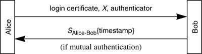

Networking Security Networking Security Networking Security Security Networking Security Networking Security Networking Charlie Kaufman Radia Perlman Mike Speciner Prentice Hall Network Security: Private Communication in a Public World, Second Edition
24.4. DASS/SPX
DASS stands for Distributed Authentication Security Service. It was deployed as SPX, pronounced Sphinx, and nobody has come up with an acronym expansion for SPX. It was developed at Digital Equipment Corporation and documented in RFC 1507 and [TARD91]. SPX is technically the product name, whereas DASS is the architecture, rather like NetSP and KryptoKnight. We'll use the term DASS because we think it is the more commonly used term for it in the security community, though we haven't done any official polls.
24.4.1. DASS Certification Hierarchy
DASS has a certificate hierarchy similar to what we describe in §15.3.8 Bottom-Up with Name Constraints. Conceptually there's a CA responsible for each node in the naming hierarchy. Each CA signs a certificate for its parent and for each of its children. These are known as up certificates and down certificates, respectively. DASS also allows cross certificates, where a CA can sign a certificate for any other CA, so that authentication can short-circuit the hierarchy for performance or security reasons. Also, there does not need to be a distinct CA for every node in the tree. One CA could be responsible for many parts of the naming tree.
DASS uses X.509 syntax for certificates and originally envisioned storing certificates in an X.500-style directory service, but since one was not deployed, the DASS designers invented their own certificate distribution service, which they called a CDC, for Certificate Distribution Center. It not only stores certificates, but also stores encrypted private keys. Certificates are publicly readable. To obtain the encrypted private key, the client machine must prove knowledge of the user's password, and must know the public key of the CDC in order for this exchange to be secure. DASS would benefit from one of the protocols described in §12.4 Strong Password Credentials Download Protocols, but they did not exist at the time of its design.
24.4.2. Login Key
Once the workstation retrieves the user's private key P, it immediately chooses what DASS refers to as a login RSA key pair and then generates a certificate, which we'll call the login certificate, signing it with P, stating the user's login public key and an expiration time. Then it forgets P and remembers only the login private key and the login certificate. This is similar to obtaining a TGT in Kerberos, or obtaining a GQ key in NetWare V4. The DASS method is lower-performance during login than the NetWare method because it takes more computation to generate an RSA key pair than a GQ key. During authentication the DASS method is lower-performance on the client side because RSA signature generation is slower than GQ signature generation. But the DASS method is higher-performance on the server side, because with small public exponents, RSA signature verification is faster than GQ signature verification. The DASS designers envisioned a world where workstations had cycles to burn while servers were overburdened. The NetWare designers envisioned the opposite.
24.4.3. DASS Authentication Handshake
Let's say user Alice accesses resource Bob. We won't distinguish between Alice's workstation and Alice. Obviously it's Alice's workstation that is performing the cryptographic operations, but we'll refer to the two ends of the conversation as Alice and Bob. The initial authentication handshake is a mutual authentication handshake based on public keys. Alice knows Bob's public key by looking up and verifying his certificate in the CDC. Bob knows Alice's long-term public key by looking up her certificate in the CDC (and verifying the certificate signature). But the key in Alice's certificate is not the key Alice will be using. Alice has to transmit her login certificate to Bob, and Bob, after following the certificate chain, now knows Alice's public key for this login session.
In the process of doing an authentication handshake, Alice and Bob establish a shared secret key. Future cryptographic operations, such as encryption of the conversation, are done using that shared secret key. For performance reasons, DASS is designed so that subsequent authentication exchanges between the same two parties can also be done without any public key operations, using only the shared secret key.
It is interesting how the secret key is established between Alice and Bob. Alice (her workstation of course) chooses a DES key SAlice-Bob at random, encrypts SAlice-Bob with Bob's public key, and signs the result using her login private key (for integrity protection). We'll use X to designate the encrypted signed SAlice-Bob.
Alice sends her login certificate and X to Bob, along with an authenticator proving she knows the key SAlice-Bob. Bob then does the following:
gets Alice's long-term public key, by retrieving and verifying her certificate from the CDC verifies Alice's login certificate by using her long-term public key extracts Alice's login public key from her login certificate reverses Alice's signature on X by using her login public key reverses the encryption of X using his own private key, getting SAlice-Bob verifies the authenticator by decrypting it using SAlice-Bob and checking whether the time is valid encrypts the timestamp using SAlice-Bob and returns it to provide mutual authentication

For performance reasons, both Bob and Alice cache both SAlice-Bob and X. If Alice accesses Bob again, Alice will transmit X again, with a new authenticator. So why does Bob need to remember X? The reason he does is to save himself the trouble of cryptographically unwrapping X again in order to obtain SAlice-Bob. Alice might have forgotten SAlice-Bob and chosen a new secret. So Bob has to check if the X he receives is the same as the one he has cached, but if they match he can assume he's using the same key as before with Alice. If they don't match, or if Bob has forgotten the cached information, the authentication handshake works just fine. It just involves the extra computation of Bob cryptographically unwrapping X.
Why does Alice need to cache X? Since Alice does not know whether Bob has cached SAlice-Bob, she has to send X again so that the authentication handshake can proceed whether or not Bob has cached SAlice-Bob. Since she has to perform cryptographic operations in order to regenerate X, it saves her time if she caches X.
An interesting feature of DASS is that the authentication handshake is designed to work in a single message in the case of one-way authentication, and two messages in the case of mutual authentication. The price it pays to reach this theoretical minimum number of messages is that it requires roughly synchronized clocks, like Kerberos.
24.4.4. DASS Authenticators
When Alice initiates a connection to Bob, she sends an authenticator. When mutual authentication is required, Bob sends an authenticator back to Alice. The authenticator is very different in the two directions. In the Alice Bob direction, Alice sends Bob an unencrypted timestamp and a MAC. The MAC is computed by doing a DES CBC residue using the secret key SAlice-Bob and an IV of 0, computed over the timestamp and the network layer source and destination addresses extracted from the network layer header. The authenticator Bob sends back to Alice is the timestamp encrypted with SAlice-Bob. Bob direction, Alice sends Bob an unencrypted timestamp and a MAC. The MAC is computed by doing a DES CBC residue using the secret key SAlice-Bob and an IV of 0, computed over the timestamp and the network layer source and destination addresses extracted from the network layer header. The authenticator Bob sends back to Alice is the timestamp encrypted with SAlice-Bob.
24.4.5. DASS Delegation
DASS is designed so that if Alice wants to delegate to Bob in addition to performing an authentication handshake with him, the delegation can be piggybacked on the authentication handshake.
Recall that during the authentication handshake (without delegation), Alice sends Bob her login certificate, the magic quantity X, and an authenticator. Remember that X is the session key SAlice-Bob encrypted with Bob's public key and signed with Alice's login key.
If delegation is being done as well as authentication, there's one less public key operation, because instead of sending X (which is the session key encrypted with Bob's public key and then signed with Alice's private key), Alice just sends the session key encrypted with Bob's public key. In order to delegate to Bob, she sends Bob her login private key encrypted with SAlice-Bob. As in the non-delegation case, she also sends an authenticator proving she knows SAlice-Bob. It takes some thought as to why, in the delegation case, it isn't necessary to sign the encrypted session key, whereas it is necessary in the non-delegation case. The DASS designers really enjoyed standing on their heads to minimize public key operations (see Homework Problem 1).
24.4.6. Saving Bits
While DASS was intended to work with a variety of protocols, and was only actually deployed with TCP/IP, the DASS designers wanted to integrate their protocols with DECnet Phase IV, which introduced some interesting constraints. They could only piggyback the security information on existing transport layer connection messages if the additional information did not make the transport layer connection messages longer than an Ethernet packet (approximately 1500 bytes). Alice initiates contact with Bob with a connect request message. Bob replies with a connect confirm message. There were only 16 spare bytes in a connect confirm, and DASS managed to only use 8 of them. DASS needed more space in a connect request, because Alice sends her login certificate, X, and an authenticator. Luckily, there was enough room. But there would not have been enough room if the DASS designers didn't spend a lot of time doing clever compression of the data they needed to send.
The exact packet formats are not important, but the most dramatic encoding trick they played was the encoding of Alice's login private key when she transmits it to Bob for delegation. Recall that an RSA public key consists of <e,n>, where n is the modulus and e is the public exponent. An RSA private key consists of <d,n>. Alice's login certificate contains <e,n>. You'd expect Alice to send d in order to give Bob her login private key. But instead, she sends p, which is the smaller of the factors of n, and will be about half as big as d (so it will be about 256 bits instead of 512). Bob has to divide n by p to get q, and then use Euclid's algorithm to calculate d (given that he knows e and n from her login certificate). Actually, when doing delegation it's friendly to pass more than just d, since if Bob knows n's factorization he can do private key operations more efficiently. Given p, Bob can compute all the information that would have been good to send him. If instead, Alice were to pass all the information so that Bob didn't need to do any computation, it would take about 2½ times the size of the modulus (so about 1300 bits). The DASS method makes Bob do some work up front, but then he can sign efficiently on Alice's behalf.
DASS does use ASN.1 encoding, which might seem surprising since its designers were so worried about encoding efficiency. But they were very careful to avoid sending redundant information, and they were clever in their use of ASN.1 syntax. By using IMPLICIT and other tricks they avoided the size explosion found in Kerberos V5 and X.509.
|